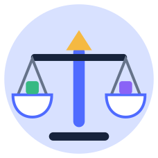
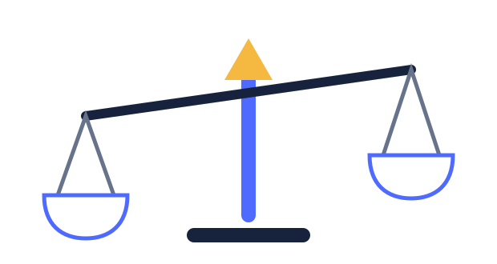
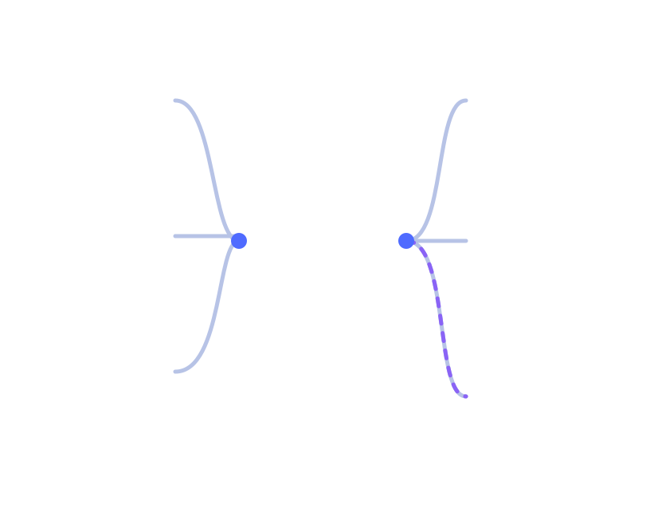

今天的数学冒险
一起修好一座
摇摇晃晃的天平
你可以一个个试，也可以发明自己的办法。系统会听你怎么想，不只看答案。
看一看
动一动
讲一讲

下午好，小宇。今天想从哪个问题出发？
今天的数学冒险
你可以一个个试，也可以发明自己的办法。系统会听你怎么想，不只看答案。

每一条路都会连接到真正的数学，不按课本页码排队。
先用你自己的办法
拖一拖积木，或者直接告诉小通你的想法

这里不显示“考了几分”，只显示哪些路已经接通，哪些还要验证。
点一个节点，可以看到“小宇是怎样理解的”。

没有总分 · 没有排名
不汇总成一个分数。这里展示证据、未知、问题与下一步理由。
不是分数：每个点都能追溯到一次真实交互
稳定证据正在形成尚未观察| 概念 / 通道 | 实物 | 图 | 语言 | 符号 | 迁移 | 延迟 |
|---|---|---|---|---|---|---|
| 两边相等当前主题 | ||||||
| 数的分解已稳定 | ||||||
| “＝”的意义待迁移 | ||||||
| 一组一组数兴趣新路 |
升级条件：至少两种表征 + 独立迁移；3–7 天后再通过一次延迟验证。
选证据，不选“最高分”